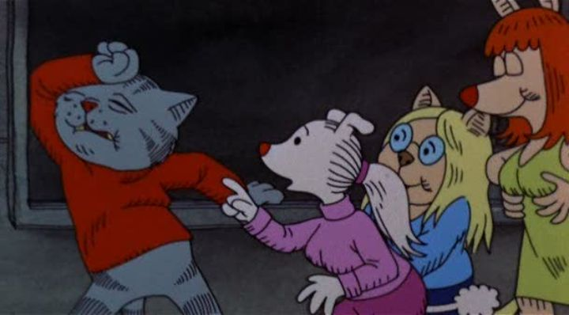

TI had long given up on some of the more obscure movies by Ralph Bakshi ever getting an in-print home video release, and therefore assumed I wouldn't get the chance to properly see them. Imagine my surprise to discover a Bluray release for "Fritz the Cat" and its sequel came out in 2021 from Kino Lorber in North America. This was Bakshi's first film, and perhaps his most comical and classic. How did this release go by without a ton of press releases on every animation news outlet? Anyway, this was the movie I was most curious about in his filmography, and I finally got my chance to sit down with it.If you haven't heard of the infamous X-rated feature animation, "Fritz the Cat" is based on an underground comic by R. Crumb, written when he was a teenager. The movie is about Fritz, in a 60's New York inhabited by cartoon animals. Fritz the Cat is a college student and aspiring writer, and his philosophy is to live life to the fullest, including partaking in as much sex, alcohol and recreational drugs as he can get his hands on to inspire his work. The movie is pretty aimless as Fritz runs around the city, sought out by idiot two pig cops, until Fritz's actions cause a riot with tragic turns. It's not a movie you necesarily watch for the story, but instead for the montage of visuals and themes such as explicit sex and nudity, violence, swearing, on-screen drug use, foul language, racism and more. The sort of stuff most filmmakers would be scared to put into any movie, let alone a cartoon, a medium dominated by family stories from Walt Disney (there's even a blink-and-you'll-miss-it cameo from Disney's mascot silhouettes in one scene). And it was successful enough to inspire other indie adult animated films through the 70's and 80's, with Bakshi at the helm, mirroring the comic-book trends of the time.Even decades later, the movie earns its X-rating. It's kind of shocking to see talking cats and dogs and rabbits with boobs and nipples and penises humping each other with weed blunts in their mouths, even if they're poorly drawn like something you'd see in a teenager's notebook. That's part of the fun too, to witness how much further out there the movie would go. That's not to say the movie is entirely devoid of substance. Bakshi's outlook and sense of humor as a Jewish urban New Yorker are in full force, spoutting smart sense with irony. An early scene of some White college girls flirting with a Black guy is a spot-on portrayal of Liberal wokeness before "woke" was a word, and is more relevant than ever 50 years later. Another scene of Fritz explaining his life phiolosphy sounds enlightened, if the visuals of him running through a metaphorical tunnel of boobs didn't reveal him to be a lazy pervert. It's sometimes funny, sometimes disturbing, and always interesting, displaying personalities that mirror the lesser-seen communities in the basements of America. And it even ends with a morale that suggests that the "extreme fun" everyone's having does have its limits before going too far, even if we're doomed to chase after it anyway. Now, suppose you aren't familiar with Bakshi and the underground art scene. "Fritz the Cat" might seem crude, vulgar and low-brow, like a cheap, disposable Mad Magazine issue. During an early orgy scene, seemingly all the drug users seem to come across as elitest philosophers, and outsiders would probably view that crowd as a band of self-centered idiots. Even when the movie makes fun of drug users like that, it feels as though it was written by that type of person too. What I'm getting at is that this movie isn't going to please the average viewer, and even for art-house fans, there are other movies from Bakshi that feel more meaningful.  It's not quite as complete as "Heavy Traffic," Bakshi's magum opus, but "Fritz" has the backbone of themes that would repeat in a lot of the director's movies. On the other hand, the production values are a mixed bag. It's cool to see such unusual examples of anthropomorphic animals, even if they're drawn simply. The animation is OK, and is uncannily familiar to the Peanuts (Charlie Brown and Snoopy) movies from the era, making the adult content all the more disturbing. But the presumably low budget means there's a ton of animation errors in coloring, perhaps intentionally kept for its "character." And while the voice acting is fine (full of authentic voices spoutting advice, as Bakshi likes to use), the audio mix is a mess. It's nearly impossible to catch most of the words spoken without subtitles, and volume blows out from quiet to loud with little warning. Compared to Bakshi's films made since (varying wildly in quality, many of which repeat the same themes of X-rated content in the backdrop of a grimy New-York-style city), "Fritz the Cat" still holds up surprisingly well, perhaps in part to the use of cartoon animals and a more comedic tone, which is novel to his other work. It's a significant part of movie history, and is a fascinating movie to watch, even if the old production values don't hold up well. But remember kids, this movie's for adults only.
- "Ani" More reviews can be found at : https://2danicritic.github.io/ Previous review: review_Fragtime Next review: review_From_The_New_World